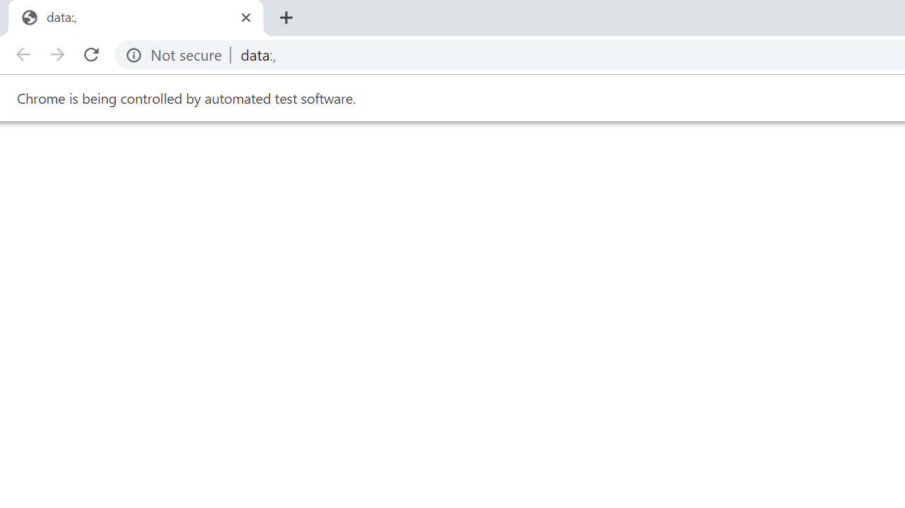
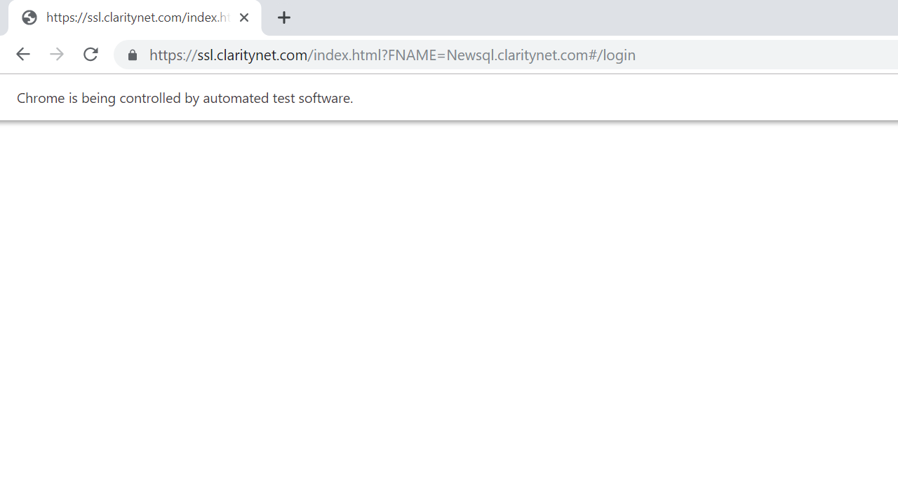
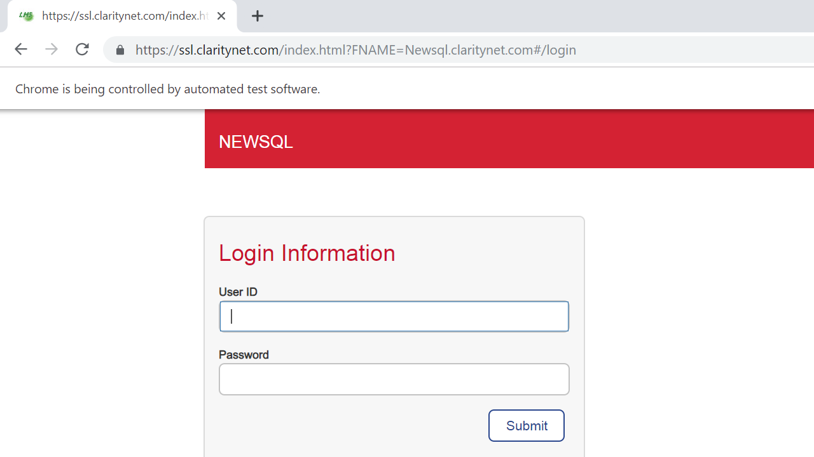
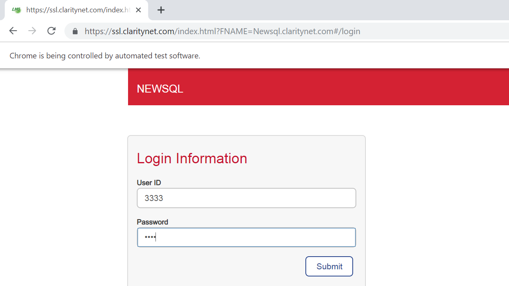

Reflections of Visionary Minds

The following table lists down the Sequential Steps during the Run
TestCase Name: feature : Iteration 1
Time Taken for Executing: 59 Sec
Current Run Number: Run 29 Method Type: Test Method
TestCase Name: feature : Iteration 1
Time Taken for Executing: 59 Sec
Current Run Number: Run 29 Method Type: Test Method
Requirement Coverage/ TestCase Description
Requirement Coverage/Build Info/Cycle - Description
Execution Platform Details
| O.S | : | Windows 10, amd64Bit, v10.0 |
| Java | : | 1.8.0_211 |
| Hostname | : | ADCPINDADESK06 |
| Selenium | : | 3.141.59 |
Summary
| Status | : | Failed |
| Execution Date | : | 10-Jun-2019 02:59:40 |
| Browser | : | UnKnown, |
Author Info
| Author Name | : | Unknown |
| Creation Date | : | Unknown |
| Version | : | Unknown |
| System User | : | cst065 |
| S.No | Step Description | Input Value | Expected Value | Actual Value | Time | Line No | Status | Screen shot |
|---|---|---|---|---|---|---|---|---|
| 1 | browser initialized | 5 Sec | 39 |  |
 | |||
| 2 | Launch URL | http://newsql.claritynet.com | 9 Sec | 46 | |
 | ||
| 3 | Enter UserID | 3333 | 8 Sec | 30 | |
 | ||
| 4 | Enter Password | c04st4l | 249 Milli Sec | 39 | |
 | ||
| 5 | Submit Button Click | 205 Milli Sec | 48 | |
{kind=link}
{kind=link}
{kind=link}
{kind=link}
{kind=link}
Parameters:
Param: Regression testing to validate UserMangement Module
Reason for Failure: cucumber.runtime.CucumberException{#29}),platform=Windows NT 10.0.17134 x86_64) (WARNING: The server did not provide any stacktrace information) Command duration or timeout: 0 milliseconds Build info: version: '3.141.59', revision: 'e82be7d358', time: '2018-11-14T08:17:03' System info: host: 'ADCPINDADESK06', ip: '10.145.49.80', os.name: 'Windows 10', os.arch: 'amd64', os.version: '10.0', java.version: '1.8.0_211' Driver info: org.openqa.selenium.chrome.ChromeDriver Capabilities {acceptInsecureCerts: false, acceptSslCerts: false, applicationCacheEnabled: false, browserConnectionEnabled: false, browserName: chrome, chrome: {chromedriverVersion: 74.0.3729.6 (255758eccf3d24..., userDataDir: C:\Users\cst065\AppData\Loc...}, cssSelectorsEnabled: true, databaseEnabled: false, goog:chromeOptions: {debuggerAddress: localhost:53039}, handlesAlerts: true, hasTouchScreen: false, javascriptEnabled: true, locationContextEnabled: true, mobileEmulationEnabled: false, nativeEvents: true, networkConnectionEnabled: false, pageLoadStrategy: normal, platform: XP, platformName: XP, proxy: Proxy(), rotatable: false, setWindowRect: true, strictFileInteractability: false, takesHeapSnapshot: true, takesScreenshot: true, timeouts: {implicit: 0, pageLoad: 300000, script: 30000}, unexpectedAlertBehaviour: ignore, unhandledPromptBehavior: ignore, version: 75.0.3770.80, webStorageEnabled: true
Click Me to Show/Hide the Full Stack Trace
Param: Regression testing to validate UserMangement Module
Reason for Failure: cucumber.runtime.CucumberException{#29}),platform=Windows NT 10.0.17134 x86_64) (WARNING: The server did not provide any stacktrace information) Command duration or timeout: 0 milliseconds Build info: version: '3.141.59', revision: 'e82be7d358', time: '2018-11-14T08:17:03' System info: host: 'ADCPINDADESK06', ip: '10.145.49.80', os.name: 'Windows 10', os.arch: 'amd64', os.version: '10.0', java.version: '1.8.0_211' Driver info: org.openqa.selenium.chrome.ChromeDriver Capabilities {acceptInsecureCerts: false, acceptSslCerts: false, applicationCacheEnabled: false, browserConnectionEnabled: false, browserName: chrome, chrome: {chromedriverVersion: 74.0.3729.6 (255758eccf3d24..., userDataDir: C:\Users\cst065\AppData\Loc...}, cssSelectorsEnabled: true, databaseEnabled: false, goog:chromeOptions: {debuggerAddress: localhost:53039}, handlesAlerts: true, hasTouchScreen: false, javascriptEnabled: true, locationContextEnabled: true, mobileEmulationEnabled: false, nativeEvents: true, networkConnectionEnabled: false, pageLoadStrategy: normal, platform: XP, platformName: XP, proxy: Proxy(), rotatable: false, setWindowRect: true, strictFileInteractability: false, takesHeapSnapshot: true, takesScreenshot: true, timeouts: {implicit: 0, pageLoad: 300000, script: 30000}, unexpectedAlertBehaviour: ignore, unhandledPromptBehavior: ignore, version: 75.0.3770.80, webStorageEnabled: true
Click Me to Show/Hide the Full Stack Trace
cucumber.runtime.CucumberException: org.openqa.selenium.ElementClickInterceptedException: element click intercepted: Element is not clickable at point (1016, 549). Other element would receive the click:
...
(Session info: chrome=75.0.3770.80)
(Driver info: chromedriver=74.0.3729.6 (255758eccf3d244491b8a1317aa76e1ce10d57e9-refs/branch-heads/3729@{#29}),platform=Windows NT 10.0.17134 x86_64) (WARNING: The server did not provide any stacktrace information)
Command duration or timeout: 0 milliseconds
Build info: version: '3.141.59', revision: 'e82be7d358', time: '2018-11-14T08:17:03'
System info: host: 'ADCPINDADESK06', ip: '10.145.49.80', os.name: 'Windows 10', os.arch: 'amd64', os.version: '10.0', java.version: '1.8.0_211'
Driver info: org.openqa.selenium.chrome.ChromeDriver
Capabilities {acceptInsecureCerts: false, acceptSslCerts: false, applicationCacheEnabled: false, browserConnectionEnabled: false, browserName: chrome, chrome: {chromedriverVersion: 74.0.3729.6 (255758eccf3d24..., userDataDir: C:\Users\cst065\AppData\Loc...}, cssSelectorsEnabled: true, databaseEnabled: false, goog:chromeOptions: {debuggerAddress: localhost:53039}, handlesAlerts: true, hasTouchScreen: false, javascriptEnabled: true, locationContextEnabled: true, mobileEmulationEnabled: false, nativeEvents: true, networkConnectionEnabled: false, pageLoadStrategy: normal, platform: XP, platformName: XP, proxy: Proxy(), rotatable: false, setWindowRect: true, strictFileInteractability: false, takesHeapSnapshot: true, takesScreenshot: true, timeouts: {implicit: 0, pageLoad: 300000, script: 30000}, unexpectedAlertBehaviour: ignore, unhandledPromptBehavior: ignore, version: 75.0.3770.80, webStorageEnabled: true}
Session ID: 8fdfbf91aa782156dd334814a732d1cb
at cucumber.api.testng.TestNGCucumberRunner.runCucumber(TestNGCucumberRunner.java:69)
at cucumber.api.testng.AbstractTestNGCucumberTests.feature(AbstractTestNGCucumberTests.java:21)
at sun.reflect.NativeMethodAccessorImpl.invoke0(Native Method)
at sun.reflect.NativeMethodAccessorImpl.invoke(Unknown Source)
at sun.reflect.DelegatingMethodAccessorImpl.invoke(Unknown Source)
at java.lang.reflect.Method.invoke(Unknown Source)
at org.testng.internal.MethodInvocationHelper.invokeMethod(MethodInvocationHelper.java:86)
at org.testng.internal.Invoker.invokeMethod(Invoker.java:643)
at org.testng.internal.Invoker.invokeTestMethod(Invoker.java:820)
at org.testng.internal.Invoker.invokeTestMethods(Invoker.java:1128)
at org.testng.internal.TestMethodWorker.invokeTestMethods(TestMethodWorker.java:129)
at org.testng.internal.TestMethodWorker.run(TestMethodWorker.java:112)
at org.testng.TestRunner.privateRun(TestRunner.java:782)
at org.testng.TestRunner.run(TestRunner.java:632)
at org.testng.SuiteRunner.runTest(SuiteRunner.java:366)
at org.testng.SuiteRunner.runSequentially(SuiteRunner.java:361)
at org.testng.SuiteRunner.privateRun(SuiteRunner.java:319)
at org.testng.SuiteRunner.run(SuiteRunner.java:268)
at org.testng.SuiteRunnerWorker.runSuite(SuiteRunnerWorker.java:52)
at org.testng.SuiteRunnerWorker.run(SuiteRunnerWorker.java:86)
at org.testng.TestNG.runSuitesSequentially(TestNG.java:1244)
at org.testng.TestNG.runSuitesLocally(TestNG.java:1169)
at org.testng.TestNG.run(TestNG.java:1064)
at org.testng.remote.AbstractRemoteTestNG.run(AbstractRemoteTestNG.java:126)
at org.testng.remote.RemoteTestNG.initAndRun(RemoteTestNG.java:152)
at org.testng.remote.RemoteTestNG.main(RemoteTestNG.java:57)
Caused by: org.openqa.selenium.ElementClickInterceptedException: element click intercepted: Element is not clickable at point (1016, 549). Other element would receive the click: ...
(Session info: chrome=75.0.3770.80)
(Driver info: chromedriver=74.0.3729.6 (255758eccf3d244491b8a1317aa76e1ce10d57e9-refs/branch-heads/3729@{#29}),platform=Windows NT 10.0.17134 x86_64) (WARNING: The server did not provide any stacktrace information)
Command duration or timeout: 0 milliseconds
Build info: version: '3.141.59', revision: 'e82be7d358', time: '2018-11-14T08:17:03'
System info: host: 'ADCPINDADESK06', ip: '10.145.49.80', os.name: 'Windows 10', os.arch: 'amd64', os.version: '10.0', java.version: '1.8.0_211'
Driver info: org.openqa.selenium.chrome.ChromeDriver
Capabilities {acceptInsecureCerts: false, acceptSslCerts: false, applicationCacheEnabled: false, browserConnectionEnabled: false, browserName: chrome, chrome: {chromedriverVersion: 74.0.3729.6 (255758eccf3d24..., userDataDir: C:\Users\cst065\AppData\Loc...}, cssSelectorsEnabled: true, databaseEnabled: false, goog:chromeOptions: {debuggerAddress: localhost:53039}, handlesAlerts: true, hasTouchScreen: false, javascriptEnabled: true, locationContextEnabled: true, mobileEmulationEnabled: false, nativeEvents: true, networkConnectionEnabled: false, pageLoadStrategy: normal, platform: XP, platformName: XP, proxy: Proxy(), rotatable: false, setWindowRect: true, strictFileInteractability: false, takesHeapSnapshot: true, takesScreenshot: true, timeouts: {implicit: 0, pageLoad: 300000, script: 30000}, unexpectedAlertBehaviour: ignore, unhandledPromptBehavior: ignore, version: 75.0.3770.80, webStorageEnabled: true}
Session ID: 8fdfbf91aa782156dd334814a732d1cb
at sun.reflect.NativeConstructorAccessorImpl.newInstance0(Native Method)
at sun.reflect.NativeConstructorAccessorImpl.newInstance(Unknown Source)
at sun.reflect.DelegatingConstructorAccessorImpl.newInstance(Unknown Source)
at java.lang.reflect.Constructor.newInstance(Unknown Source)
at org.openqa.selenium.remote.ErrorHandler.createThrowable(ErrorHandler.java:214)
at org.openqa.selenium.remote.ErrorHandler.throwIfResponseFailed(ErrorHandler.java:166)
at org.openqa.selenium.remote.http.JsonHttpResponseCodec.reconstructValue(JsonHttpResponseCodec.java:40)
at org.openqa.selenium.remote.http.AbstractHttpResponseCodec.decode(AbstractHttpResponseCodec.java:80)
at org.openqa.selenium.remote.http.AbstractHttpResponseCodec.decode(AbstractHttpResponseCodec.java:44)
at org.openqa.selenium.remote.HttpCommandExecutor.execute(HttpCommandExecutor.java:158)
at org.openqa.selenium.remote.service.DriverCommandExecutor.execute(DriverCommandExecutor.java:83)
at org.openqa.selenium.remote.RemoteWebDriver.execute(RemoteWebDriver.java:552)
at org.openqa.selenium.remote.RemoteWebElement.execute(RemoteWebElement.java:285)
at org.openqa.selenium.remote.RemoteWebElement.click(RemoteWebElement.java:84)
at sun.reflect.NativeMethodAccessorImpl.invoke0(Native Method)
at sun.reflect.NativeMethodAccessorImpl.invoke(Unknown Source)
at sun.reflect.DelegatingMethodAccessorImpl.invoke(Unknown Source)
at java.lang.reflect.Method.invoke(Unknown Source)
at org.openqa.selenium.support.pagefactory.internal.LocatingElementHandler.invoke(LocatingElementHandler.java:51)
at com.sun.proxy.$Proxy21.click(Unknown Source)
at pages.action.GroupsList_Actions.GroupAddButton(GroupsList_Actions.java:32)
at steps.UserManagement_Steps.click_the_Add_button(UserManagement_Steps.java:137)
at ?.And Click the Add button(UserManagement.feature:68)